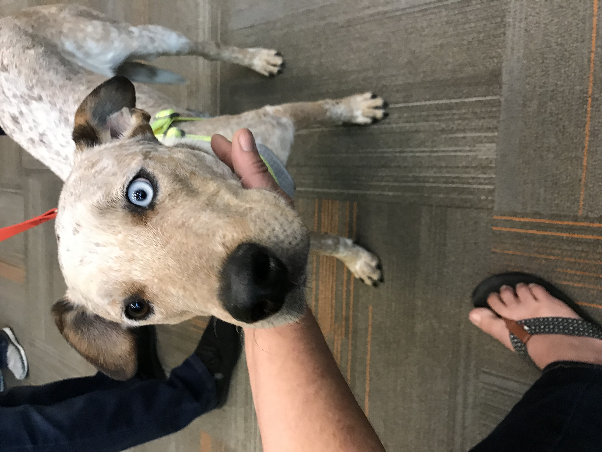

 Hello, my name is Aida. This website is part of my Applied IT Project for PLD 450 class for Northern Arizona University Computer Information Technology curriculum.
This has been a very interesting journey so far. I'm looking forward to finishing this class and graduating.
By being enrolled in the Personalized Learning program, I've learned valuable skills, such as history of computers, business analysis skills, software design, coding and development, as well as quality testing and user acceptance testing. I've learned about databases, network infrastructure, as well as cybersecurity.